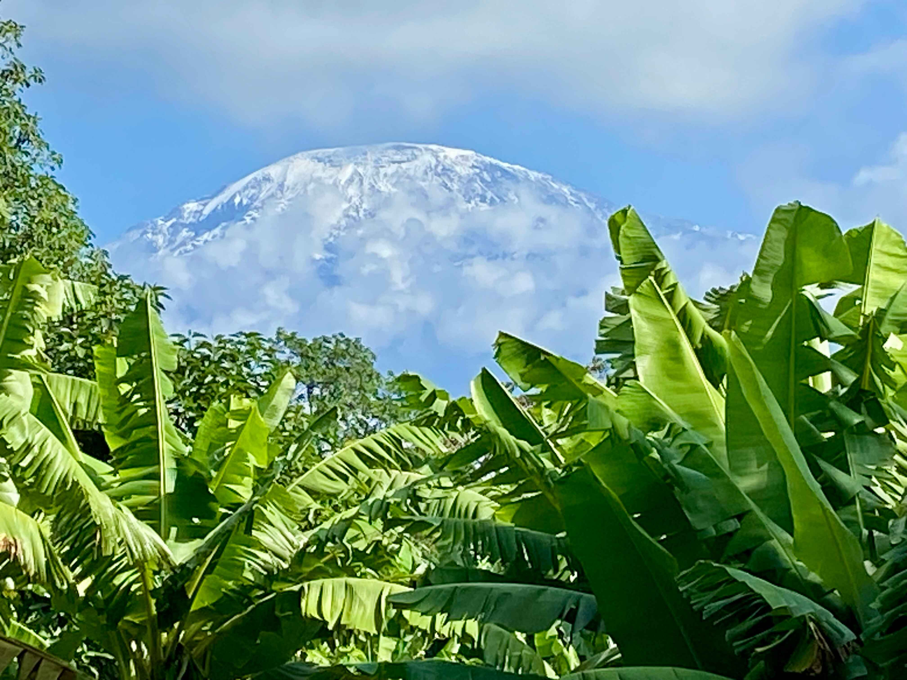

The scenic beauty and variety of landscape in Tanzania are stunning. This country is famous for its majestic vistas, traditional tribespeople, exceptional wildlife, and the kindness of its people. In this cycling tour you will pass through many villages, meeting various people of different cultures, such as the Chagga People, the Maasai, Usambara tribesmen and the People of Zanzibar. You will cycle alongside wildlife grazing the plains. You will pass Mt. Kilimanjaro, the highest freestanding mountain in the world, then cycle through the African savannah to Chala, the stunning crater lake. Later, you will enjoy delicious coffee at a coffee farm while learning all about Tanzania’s coffee culture and the Chagga people. You will then be transferred to the Usambara Mountains to cycle and hike through the cool rainforest boasting the 9th biggest bio-diversity in the world, ultimately dropping down to the tropical Indian Ocean coast. Finally, you will experience the rich culture and buzz of Zanzibar Island.
Join us now on this unique cycling tour. Fully immerse yourself into Tanzania and experience the people, culture, and landscapes of this amazing place.
Hello, I am Josée, a Canadian adventurer and educator with a passion for discovering the world by bicycle. I cycled more than 50,000 km in 30 countries, on five continents, solo and unsupported! I fell in love with Tanzania when I first came in 2020 to climb Kilimanjaro. I returned to Africa to cycle from South Africa to Uganda, spending two months in Tanzania. I now live in Tanzania for part of the year. I have previous experience planning and guiding trips in South America and Tanzania. I have a Master’s degree in linguistics and speak fluent French, English and Spanish. I now dedicate myself to sharing my passion for discovering the world by bicycle. Join me now and make your dream come true!
| DISTANCE | DATE | ||||
|---|---|---|---|---|---|
| 350km | February 1-13, 2026 | ||||
| COST | DIFFICULTY | $3400 US + 300$ Single Supplement | 4/5 (45% unpaved) | ||
| THE jOURNEY | HIGHLIGHTS | ||||
|
|
||||
Explore North-Eastern Tanzania’s stunning vistas by bicycle passing through many villages and towns. Meet local cultures such as the Chagga People, the Maasai, Usambara tribesmen and the People of Zanzibar.
On arrival at Kilimanjaro International airport, you will be met and transferred 50 km to the town of Moshi (journey time is approximately 45 minutes depending on traffic). This evening there will be a tour briefing before dinner.
Meal plan: Full Board
Accomodation: Chanya Lodge
Cycling Moshi to Marangu, Marangu Village is a picturesque settlement located in the Moshi region of Tanzania. Nestled at the base of Mount Kilimanjaro, Africa’s highest peak, Marangu Village is a popular starting point for climbers embarking on their journey to conquer the mountain. The village is renowned for its natural beauty, surrounded by lush green landscapes, fertile farmlands, and dense rainforests. It is home to the Chagga people, who have a rich cultural heritage and a long history of living harmoniously with the mountain.
Distance: 35km, 664m 161m
Road: Paved
Meal plan: Full Board
Accomodation: Marangu Hotel
Cycle in the footfills of Mount Kilimanjaro in the morning to eventually descend to Lake Chala, a hidden gem. The remote caldera lake on the border of Tanzania & Kenya is only 55 km from Moshi and therefore the perfect get away for a day. Pure tranquility and beautiful nature await you at the lake. Enjoy the stunning vistas of an untouched Africa. In the morning, you will ride your bicycle to Lake Chala Safari Camp with a packed lunch box and drinking water. Upon arrival you will see the beautiful private game reserve overlooking the Crater Lake. There is a very high possibility of spotting the baboon monkey, velvet monkey, blue monkey, and many different birds, that live in this wonderful savannah land. After lunch, you will return by vehicle to Marangu and visit the Marangu Coffee Farm. This farm will offer you both, a delighful sensory experience with its fragrant and delicious coffee and also provide you with an educational journey into the intricate process of coffee farming and production. You will immerse yourself in local Chaga culture, the beauty and the flavor of Tanzania’s coffee culture.
Distance: 28 km, 315m 706m
Road: Paved & unpaved
Meal plan: Full Board
Accomodation: Marangu Hotel
After breakfast, you will have an early departure and drive about 250 km south to the ecologically important Usambara Mountains. The van will drive a very steep hill and then will pass through the beautiful village of Mtae. After lunch at the lodge, walk/ cycle along the ridge through picturesque villages to the Mambo View Point eco-lodge at 1900 m. or simply rest and enjoy the magnificent views over the Pare Mountains, the Mkomazi National Park and Kilimanjaro.
Distance: 250 km in vehicle
Road: Paved & unpaved
Meal plan: Full Board
Accomodation: Magumba View Cottages
You will cycle from the lodge at Usambara Mountains (Lushoto). You will ride through winding roads and picturesque villages. Here you will enjoy lush green mountains, a cooler climate and beautiful views. You can cycle the entire distance or choose to do half and rest up at the Irente View Cliff Lodge to enjoy magnificent views of the Maasai Steppe.
Distance: 54 km, 946m 1360m
Road: Paved & unpaved
Meal plan: Full Board
Accomodation: Magumba View Cottages
You will hike through the beautiful Magamba Nature Forest located in the Usambara Mountain Range. You will experience the flora and fauna of the reserve and listen to the sounds of birds and animals like the bush pig, blue monkey and black and white Colobus monkey. If you are lucky, you may see a chameleon.
Distance: Hiking
Road: Unpaved
Meal plan: Full Board
Accomodation: Irente View Cliff Lodge
Today you will already be tackling your last bike stage. From the lodge, you will take a gravel road, the old Lushoto Highway, to Mombo. You will have fun riding downhill through small villages and the lush green vegetation. Beside you will meet many locals with simple bicycles. From Mombo, you will reach the tar road all the way to Korogwe.
Distance: 77 km, 729 m 1896 m
Road: Gravel & Paved
Meal plan: Full Board
Accomodation: Korogwe Executive Lounge
Cycling from Korogwe to Muheza can be a wonderful adventure, allowing you to enjoy the scenic beauty of Tanzania’s countryside and embrace the beautiful landscapes, interact with locals, and immerse yourself in the culture and surroundings.
Distance: 59 km 389 m 505 m
Road: Gravel & Paved
Meal plan: Full Board
Accomodation: Hilltop Hotel
Cycling from Muheza to Pangani offers another exciting opportunity to explore Tanzania’s beautiful scenery. Pangani is a coastal town located in the Tanga Region of North – Eastern Tanzania. It sits on the banks of the Pangani River and faces the Indian Ocean. Pangagni is known for its historical significance and natural beauty.
Distance: 51 km 223 m 406 m
Road: Paved
Meal plan: Full Board
Accomodation: Pangani Cliff Lodge
Pangani is an ancient town believed to date from before the 6th century BC and was once a strategic point on the caravan route for exporting slaves and ivory. Now it is mainly a fishing and vacation town. You have all day to explore the town or visit Pangani Falls, a stunning waterfall, which provides electricity to several major towns. Another option is to just relax on the beach for a well-earned rest after yesterday’s long ride.
Accomodation: Pangani Cliff Lodge
An early boat transfer takes us to Nungwi at the north end of Zanzibar Island (also called Unguja). Zanzibar is known as the ‘Spice Island’ for its cloves, nutmeg, cinnamon and pepper. The boat trip takes about 2 hours. Nungwi is a vibrant fishing village loved by its many visitors. Our hotel overlooks the sea to the distant island of Tumbatu and its lighthouse. The beautiful white coral and seashell beach is the perfect place to watch an incredible sunset.
Meal plan: Half Board
Accomodation: Pangani Cliff Lodge
Zanzibar Island has lured traders, adventurers and explorers for centuries. We explore it by bike, ending up in Stone Town, the island’s main town. Named for the coral stone of its buildings, Stone Town was once the heart of the slave and spice trades. Its winding alleys, bazaars, mosques and grand Arabian houses have changed little in 200 years. You can spend many hours exploring the fascinating labyrinth of narrow streets and alleyways. Today we ride on single-speed local bikes, and stay in a local hotel.
Meal plan: Bed & Breakfast
Accomodation: Tembo Hotel
It’s time to say goodbye to Zanzibar as our Tanzanian adventure concludes. Enjoy a delicious breakfast before we transfer you to the airport.
Meal plan: Breakfast
Josée Clermont
cliclermont@gmail.com +1 (867) 445-2167

Wilson Wood, 2025 tour
A unique cycling trip that is definitely “Off the beaten track(s)” from Kilimanjaro to Zanzibar including the Usambara Mtns. Experience Incredible changes in scenery and terrain. Top notch guides and support allows you to experience the unexpected and meet many Tanzanians in their communities. A memorable trip ! W. Wood, Ottawa, Canada.
Julia, 2023 tour
"I really enjoyed cycling through varied terrain while learning about the local history, culture, environment and language from our fantastic guides. We ended each day at beautiful accommodations with delicious meals. If you’re looking for a cycling trip of a lifetime, I would highly recommend joining!”
Perry Kulak, 2023 tour
“I loved the bike trip. It was hot and had hills so it was challenging at times. However, at the end of the day we were in lovely resorts with great food, swimming pools and, occasionally, massages for our tired muscles. We had guides at the front and back while we cycled and the support truck kept stopping often to offer us water and snacks. Everyone was very friendly and people living along the route would often wave and say hello as we passed by.”
Signature Safari is partnered with following